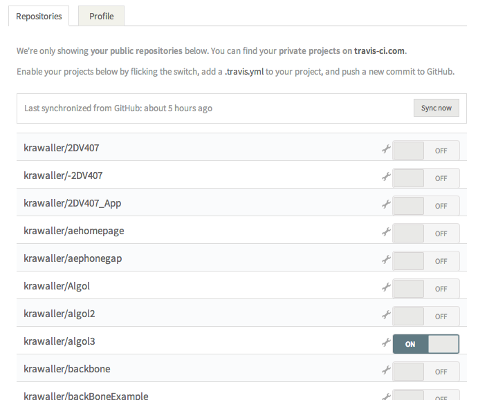

The what
In this post I'll walk through how to set up Travis Continuous integration with Jasmine+Sinon testing for an app published to Github Pages. This is mainly directed at students taking the Linnaeus RIA course, but it might serve as a good approach for other developers too.
The definition of continuous integration can be more complex, but in this context we merely aim to make our test suite run automatically whenever we push new code to the github repo. That's what Travis CI does for us. After setting up Travis to watch our repo, we can navigate to http://travis-ci.org/<githubusername>/<reponame> to see the results for each build:

The why
Having Travis running the test suite whenever we push code to Github is not a very big win in itself. After all, if I have a test suite, I'm most likely running it on my own machine, and will catch errors before pushing the code to Github.
But Github has a Travis hook for pull requests, which means that whenever someone creates a pull request to my repo, the Travis results will be shown right in the pull request:
Clicking the warning will take us to a log dump at Travis, where we can see exactly what went wrong:

Apparently, the proposed change is a very bad idea. Without Travis I'd have to run the requested change on my machine to see if the test suite held up, but now I'm immediately (well, after a few minutes) warned by Travis.
The how
First off we need to tell Travis to watch our repository. We do that by signing in to http://travis-ci.org (note that http://travis-ci.com is for private repoes) using our Github credentials, and then flicking the switch for the repo in question:

By default Travis will run the test script specified in package.json in the root of our repo. Here's the relevant parts of that file for Algol3:
{
"dependencies": {
"lodash": ">=2.4.1"
},
"scripts": {
"test": "jasmine-node test"
},
"devDependencies": {
"jasmine-node": ">=1.14.5",
"jasmine-sinon": "=0.3.2",
"sinon": ">=1.10.3"
}
}Here we see that the command Travis will run is jasmine-node test. All dependencies will be automatically installed by Travis using npm.
But we also need some Travis-specific settings. These are housed in a .travis.yml file, also to be put in the root of the repo:
language: node_js
node_js:
- "0.11"
- "0.10"
- "0.8"
before_install:
- "npm i -g jasmine-node"
branches:
only:
- gh-pagesAlthough pretty self-explanatory, here are some quick notes:
- The
languagesetting is needed as Travis supports loads of different platforms besides node; Ruby, Java, etc. - As Node's API is still under constant development it can be important to run the tests using different versions of node. These are specified using the
node_jssetting. Each version of Node will be run for each build, and the results can be individually browsed. - We have to use the
before_scripthook to make surejasmine-nodeis globally installed. Merely including it in ourpackage.jsonwill just copy the code to thenode_moduledirectory which enables us torequireit in our code, but here we need to be able to execute the binary. - By default Travis is wired to ignore the gh-pages branch of a repo, as that traditionally is used to hold a static about page. The rather verbose
branchessetting here is needed to tell Travis that we are indeed using the gh-pages branch.
An image badge is automatically generated representing the Travis result for the latest build. The URL is https://img.shields.io/travis/<githubusername>/<reponame>/<repobranch>.svg. It is customary to use it in the project README.md file as a link to the project Travis page. Here's what that looks like for Algol3:
# Algol3
Third time's the charm!
[](https://travis-ci.org/krawaller/algol3)Which then looks like this:

Supporting Node and the browser
The students are required to publish their app using Github Pages, which means it must be runnable in a browser. But Travis uses Node to run the test suite, which means the app must support Node too! This means we have to deal with requirements and exporting accordingly. Algol3 has lodash as a dependency, which is handled (admittedly not very gracefully) at the top of algol.js:
var Algol = {},
_ = (typeof require !== "undefined" ? require("./lodashmixins") : window._);At the bottom of the same file we export Algol for both Node and the browser:
if (typeof module !== 'undefined' && typeof module.exports !== 'undefined')
module.exports = Algol;
else
window.Algol = Algol;In the RIA course, the students are also required to have the tests runnable in a browser! This has two big advantages;
- You don't have to have Node locally to be able to run the test suite
- If you aren't the project owner you can see the results of the test suite on Github Pages, without having to clone the repo to your machine.
Maintaining tests are expensive, so I am a firm believer of making those tests as available as possible. Not having Node as a requirement to running them goes a long way towards achieving that.
Having the tests support the browsers means our spec files must handle dependencies in much the same way as the app itself. Here's the top of one of the spec files for Algol:
if (typeof require === 'function' && typeof module === 'object') {
var sinon = require('sinon'),
jasmineSinon = require('jasmine-sinon'),
Algol = require("../../algol.js"),
_ = require("../../lodashmixins.js");
}The tests are then made available through the standard html-runner file:
<!DOCTYPE html>
<html>
<head>
<title>demo tests</title>
<link rel="stylesheet" type="text/css" href="html/jasmine/jasmine.css">
</head>
<body>
<script type="text/javascript" src="html/jasmine/jasmine.js"></script>
<script type="text/javascript" src="html/jasmine/jasmine-html.js"></script>
<script type="text/javascript" src="html/sinon.js"></script>
<script type="text/javascript" src="html/jasmine-sinon.js"></script>
<script type="text/javascript" src="html/lodash.js"></script>
<script type="text/javascript" src="../lodashmixins.js"></script>
<script type="text/javascript" src="../algol.js"></script>
<script type="text/javascript" src="specs/time.spec.js"></script>
<script type="text/javascript" src="specs/generators.spec.js"></script>
<script type="text/javascript" src="specs/board.spec.js"></script>
<script type="text/javascript">
var jasmineEnv = jasmine.getEnv();
jasmineEnv.updateInterval = 1000;
var htmlReporter = new jasmine.HtmlReporter();
jasmineEnv.addReporter(htmlReporter);
jasmineEnv.specFilter = function(spec) {
return htmlReporter.specFilter(spec);
};
jasmineEnv.execute();
</script>
</body>
</html>There's a trap here; when using node to run the test suite, jasmine-node will automatically find all *.spec.js files and run them. In the HTML runner, we must add each spec file manually, which is easy to forget to do as we create new ones.
Note I haven't managed to used the same dependencies as Node, instead the html runner has it's own copies of jasmine, sinon and lodash inside an html directory. This is a potential danger as we might be using different versions of the code when running the tests in the browser when compared to Node. But the alternative, adding node_modules to the repo and linking to code there with script tags, has its own sets of head aches.
But the spec files and the app are all the same, which means we can somewhat reliably run the tests in the browser...

...getting the same results as if we ran jasmine-node test locally: